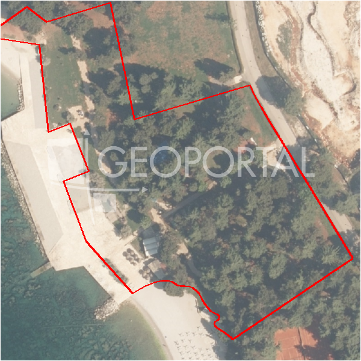

#41850 · Poreč, okolica - zemljište s pogledom na more
Poreč, Poreč, Istarska · zemljiste · njuskalo · status active · oglas ↗
Ocjena
- Score
- 58 rule 58 · LLM – · 12.09.2026.
- RLV
- 982.000 € (828 €/m²) · ratio 9,35
- Ukupna investicija
- 2,45 M€
- GBP
- 949 m²
- Feedback
- –
- CRM
- –
Oglas
- Cijena
- 105.000 € (89 €/m²)
- Površina
- 1.186 m² · DKP 16.512 m² (odstupanje 1.292,3 %)
- Prodavatelj
- agencija · DIAMOND REAL ESTATE d.o.o.
- Prvi put
- 11.09.2026. · zadnje 11.09.2026. · 0 d na tržištu
- Duplikati
- kod 2 agencija: njuskalo 114.000 €
Povijest cijene
| Datum | Cijena |
|---|---|
| 11.09.2026. | 105.000 € |
Flagovi
zop_70_100 ZOP pojas 70/100 m (−10)area_mismatch DKP površina odstupa > 15 % (−5)
zone_uncertainty zona nije pregledana (reviewed: false) (−5)
duplikati isto zemljište kod više agencija
llm_pending LLM ekstrakcija/ocjena nedostupna
Komponente score-a
| rlv | {'gbp': 948.8000000000001, 'kis': 0.8, 'nkp': 711.6, 'noi': None, 'rlv': 981698.6086956521, 'ratio': 9.34951055900621, 'value': None, 'phases': 1, 'profile': 'obala_visestambeno', 'gdv_neto': 3984960.0, 'cost_soft': 94880.00000000001, 'gdv_bruto': 4981200.0, 'kis_known': False, 'total_inv': 2445348.0000000005, 'cost_build': 1897600.0000000002, 'cost_other': 341568.0, 'cost_sales': 149436.0, 'demolition': False, 'gbp_source': 'kis', 'rlv_per_m2': 827.7391304347825, 'parcel_area': 1186.0, 'parcelation': False, 'roi_on_cost': 0.568498226019364, 'profit_at_ask': 1390175.9999999998, 'cost_demolition': 0.0, 'total_inv_phase': 2445348.0000000005, 'parcel_area_effective': 1186.0, 'sale_price_per_m2_nkp': 7000.0} |
| hard | [] |
| info | ['duplikati', 'llm_pending'] |
| rubric | {'permits': {'max': 5.0, 'detail': {'permit': 'none'}, 'points': 0.0}, 'location': {'max': 15.0, 'detail': {'source': 'rlv.yaml:istra_zapad/row1', 'sale_price_per_m2_nkp': 7000.0}, 'points': 15.0}, 'physical': {'max': 4.0, 'detail': {'slope_pct': 14.82, 'slope_points': 1.518, 'sea_row1_bonus': True}, 'points': 2.52}, 'liquidity': {'max': 3.0, 'detail': {'n_cuts': 0, 'points_cut': 0.0, 'points_days': 0.008333333333333333, 'seller_type': 'agencija', 'points_fresh': 0.5, 'price_cut_pct': None, 'days_on_market': 1, 'points_private': 0}, 'points': 0.51}, 'rlv_ratio': {'max': 25.0, 'detail': {'rlv': 981699, 'ratio': 9.35, 'asking_price': 105000.0}, 'points': 25.0}, 'ticket_fit': {'max': 10.0, 'detail': {'asking_price': 105000.0}, 'points': 3.4}, 'zone_quality': {'max': 8.0, 'detail': {'reason': 'zona nepoznata', 'source': 'nepoznato', 'zone_class': None}, 'points': 2.0}, 'profit_potential': {'max': 20.0, 'detail': {'roi_on_cost': 0.568, 'profit_at_ask': 1390176}, 'points': 20.0}, 'price_vs_benchmark': {'max': 10.0, 'detail': {'source': 'auto:Poreč', 'deviation': 0.491, 'ask_eur_m2': 89, 'benchmark_eur_m2': 173.89}, 'points': 10.0}} |
| weights | {'llm': 0.4, 'rule': 0.6, 'model': 0.0} |
| penalties | {'zop_70_100': 10, 'area_mismatch': 5, 'zone_uncertainty': 5} |
| raw_score | 78,4 |
| rlv_notes | ['DKP površina odstupa 1292 % → koristi se oglašena'] |
| flag_notes | {'max_gbp': 949, 'zop_band': '70', 'total_inv': 2445348, 'zone_code': None, 'dupl_count': 2, 'zone_class': None, 'zone_source': 'nepoznato', 'zone_reviewed': None, 'dupl_price_max': 114000.0, 'dupl_price_min': 105000.0, 'area_mismatch_pct': 1292.26} |
| caps_applied | [] |
GIS
- Čestica
- k.o. 323748, k.č. 3707/2 (pin_buffer, 0,30)
- Zona
- – (–)
- kig / kis / katnost
- – / – / –
- GP / UPU
- – · UPU –
- Pristup / nagib
- unknown · 14,8 % (max 27,7 %)
- More
- 2 m · red 1 · ZOP 70
- Zaštite
- Natura ne · zaštićeno ne · kulturno dobro ne
- Zgrade na čestici
- 1 %
- Match
- 0,30
Karta
Ortofoto (DOF)

RLV kalkulacija — pretpostavke
| gbp | {'value': 948.8000000000001, 'source': 'kis'} |
| kis | {'value': 0.8, 'source': 'default_profila'} |
| sea_row | {'value': '1', 'source': 'gis'} |
| soft_pct | {'value': 0.05, 'source': 'profil'} |
| nkp_ratio | {'value': 0.75, 'source': 'profil'} |
| cost_other | {'value': 341568.0, 'source': 'profil: doprinosi+uređenje po m² GBP, financiranje+rezerva % gradnje'} |
| parcel_area | {'value': 1186.0, 'source': 'oglas'} |
| asking_price | {'value': 105000.0, 'source': 'oglas'} |
| margin_on_cost | {'value': 0.15, 'source': 'profil'} |
| build_cost_per_m2_gbp | {'value': 2000.0, 'source': 'profil'} |
| sale_price_per_m2_nkp | {'value': 7000.0, 'source': 'rlv.yaml:istra_zapad/row1'} |
| transfer_tax_and_acquisition | {'value': 0.06, 'source': 'profil'} |
Ekstrakcija iz oglasa
| utilities | ['struja', 'voda'] |
| access_road | yes |
| slope_mention | ravno |
Benchmarks mikrolokacije
| Vrsta | Vrijednost | n | Od | Izvor |
|---|---|---|---|---|
| land_ask_eur_m2 | 174 | 302 | 11.09.2026. | auto |
| newbuild_sale_eur_m2_nkp | 3.695 | 8 | 11.09.2026. | auto |
Opis oglasa
Građevinsko zemljište s pogledom na more – 17 km od Poreča, 1.186 m² Na mirnoj lokaciji u okolici Poreča, smješteno svega 17 kilometara od obale i centra grada, nalazi se ovo atraktivno građevinsko zemljište površine 1.186 m². Parcela se nalazi u blizini mjesta sa svim sadržajima poput trgovine, škole, vrtića, restorana i kafića, ali dovoljno izdvojena da pruža privatnost i osjećaj prirodnog okruženja. Zemljište je ravno i pravilnog oblika, idealno za gradnju obiteljske kuće, vile s bazenom ili investicijski projekt. Iz parcele se pruža otvoren pogled prema moru u daljini, a okružena je zelenilom, maslinama i tradicionalnim suhozidima koji daju autentičan istarski ugođaj. Pristup parceli je osiguran putem asfaltiranog puta, a struja i voda nalaze se u neposrednoj blizini. U okruženju se nalaze obiteljske kuće i vile, a cijelo područje odiše mirom i prirodnom ljepotom. Idealna prilika za one koji žele graditi u Istri – mirna zona, otvoreni vidici i blizina mora. ID KOD AGENCIJE: 1039-184